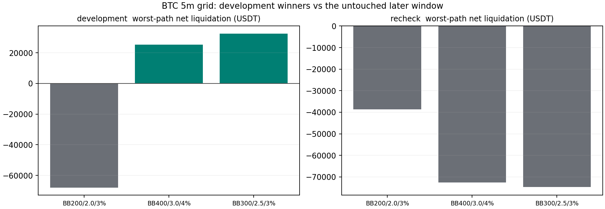

调参在开发段把这条规则从亏变成赚，然后在复查段全部崩掉，而且比不调参更差。
开发段（2024-01 → 2025-09）按事前固定规则选出稳健候选 BB400 / 倍数3.0 / 止损4% （131 笔，每笔 +0.0512R， 净清算 25184.86 USDT），诊断用峰值为 BB300 / 2.5 / 3%。 复查段（2025-09 → 2026-04，选择提交之后才读）两者分别变成每笔 -0.4080R 和 -0.2843R； 同期未调参的原参数是 -0.0666R。 两个入选者在复查段都输给了原参数——搜索不但没找到更好的参数，还找到了更差的。
而且不是成本问题。复查段稳健候选的毛 R 是 -17.55（49 笔），免手续费也亏； 开发段那点优势一天都没延续下来。
| 配置 | 完整交易 | 净清算 USDT | 每笔净 R | 毛 R | PF | 净胜率 | 收盘盯市回撤 USDT | 最大连亏 | 月块 p |
|---|---|---|---|---|---|---|---|---|---|
| 原参数 BB200 / 2.0 / 3% | 523 | -67924.14 | -0.0548 | +6.22 | 0.828 | 55.83% | 70489.44 | 8 | 未抽对照 |
| 稳健候选 BB400 / 3.0 / 4% | 131 | 25184.86 | +0.0512 | +13.27 | 1.133 | 55.73% | 28856.81 | 5 | 未抽对照 |
| 峰值 BB300 / 2.5 / 3% | 270 | 32412.51 | +0.0431 | +29.65 | 1.111 | 58.52% | 34609.11 | 4 | 未抽对照 |
开发段按事前约定不抽随机对照（对照是用来验证入选者的，不参与 315 组排序）， 所以这一段没有 p 值可报，表中如实写"未抽对照"而不是填一个占位数字。
| 配置 | 完整交易 | 净清算 USDT | 每笔净 R | 毛 R | PF | 净胜率 | 收盘盯市回撤 USDT | 最大连亏 | 月块 p |
|---|---|---|---|---|---|---|---|---|---|
| 原参数 BB200 / 2.0 / 3% | 173 | -38605.44 | -0.0666 | -0.00 | 0.802 | 52.02% | 53914.34 | 6 | 0.418 |
| 稳健候选 BB400 / 3.0 / 4% | 49 | -72650.21 | -0.4080 | -17.55 | 0.275 | 38.78% | 82371.19 | 5 | 0.945 |
| 峰值 BB300 / 2.5 / 3% | 97 | -74754.59 | -0.2843 | -21.13 | 0.451 | 45.36% | 83435.49 | 7 | 0.961 |

| 开发段较差路径净清算为正的组合 | 净清算 USDT | BB 长度 | 倍数 | 止损 |
|---|---|---|---|---|
| bb300_m2.5_sl3 | 32412.51 | 300 | 2.5 | 3% |
| bb400_m2.5_sl4 | 28924.06 | 400 | 2.5 | 4% |
| bb400_m3_sl4 | 25184.86 | 400 | 3.0 | 4% |
| bb400_m3_sl3 | 24272.90 | 400 | 3.0 | 3% |
| bb300_m2.5_sl5 | 19254.34 | 300 | 2.5 | 5% |
| bb400_m2.5_sl3 | 16733.76 | 400 | 2.5 | 3% |
| bb400_m3_sl2 | 16236.17 | 400 | 3.0 | 2% |
| bb300_m2.5_sl4 | 13956.34 | 300 | 2.5 | 4% |
| bb400_m3_sl5 | 13559.78 | 400 | 3.0 | 5% |
| bb400_m2.5_sl5 | 9536.22 | 400 | 2.5 | 5% |
exp-eth-bb-stoch-optimization-20260916-v1） 同样是开发段最优、复查段翻负，见 docs/learnings/a-grid-winner-can-depend-on-one-boundary-position.md。selection.json 提交（b71a36efad）之后才读复查段价格， 程序核对字节一致才肯运行——这道闸是代码强制的。网格冻结提交 b71a36efad；选择在读复查段之前生成 （selected_without_recheck_price_read: true）。 逐组账本 315 行、 71.0 MB 因体积只在本地保留， SHA256 78e0fc74d27d7e7b… 记录在 local_artifacts.json。
cd /Users/zhangzc/fable-trading
.venv/bin/python -m yoyo.evaluation.bb_stoch_optimization development \
--exp experiments/active/exp-btc-bb-stoch-optimization-20260916-v1
git add experiments/active/exp-btc-bb-stoch-optimization-20260916-v1 && git commit # 必须先提交
.venv/bin/python -m yoyo.evaluation.bb_stoch_optimization recheck \
--exp experiments/active/exp-btc-bb-stoch-optimization-20260916-v1
.venv/bin/python -m yoyo.evaluation.btc_bb_stoch_optimization_report
docs/HOLDOUT_LEDGER.md 记账。